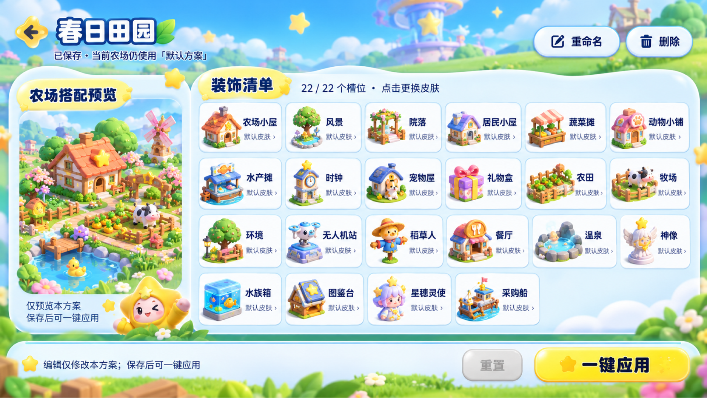
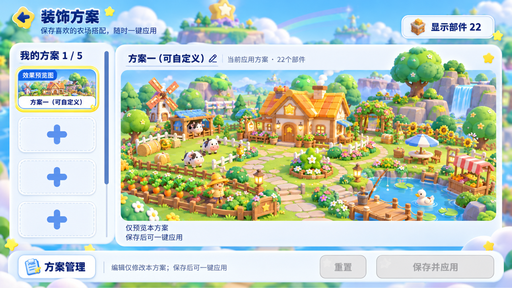
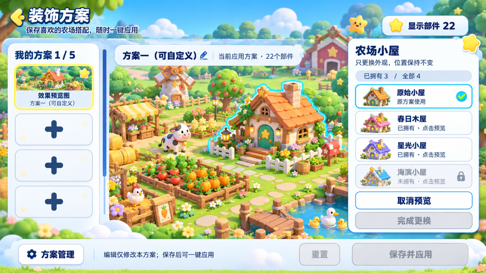

元梦之星 / 交互设计
农场装饰低保真交互原型
DREAM FARM / LOW-FIDELITY INTERACTION PROTOTYPE
围绕农场装饰，探索两种操作方式：卡片列表与独立编辑，以及全景点选与就地换肤。
查看 Figma 源文件方案 A · 卡片列表＋独立编辑页
先组织搭配，再逐项换肤；通过明确的保存与应用步骤管理农场装饰。
01 / 进入与新建

02 / 换肤与应用 · 主操作

03 / 重置与返回

04 / 未保存离开

05 / 切换预览与重命名

06 / 删除普通方案

07 / 管理边界

08 / 删除当前应用方案

09 / 最后1套保护

10 / 应用异常与取消

方案 A · 效果图

方案 B · 全景点选＋就地换肤
从农场全景直接选择部件，围绕就地编辑、保存应用与异常边界组织操作。
01 / 点哪改哪 · 主操作

02 / 保存与应用

03 / 新建与名额

04 / 未保存切换与离开

05 / 重置本次改造

06 / 重命名

07 / 删除与最后1套

08 / 最后一套保护

09 / 部件发现与可点击提示

10 / 应用异常与取消

11 / 删除当前应用方案

方案 B · 效果图

